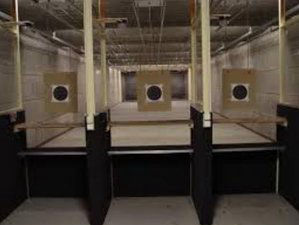

12 meter baan
De 12 meter baan is geschikt voor luchtbuksen wapens en alle vuurwapens tot .22.
Deze baan beschikt over een transporteur.

25 meter baan
De 25 meter baan is geschikt voor luchtbuksen en alle vuurwapens tot .44.
Deze baan beschikt over een zelf instelbare transporteur.

50 meter baan
De 50 meter baan geschikt voor elk vuurwapen van elk caliber.
Deze baan beschikt niet over een transporteur.